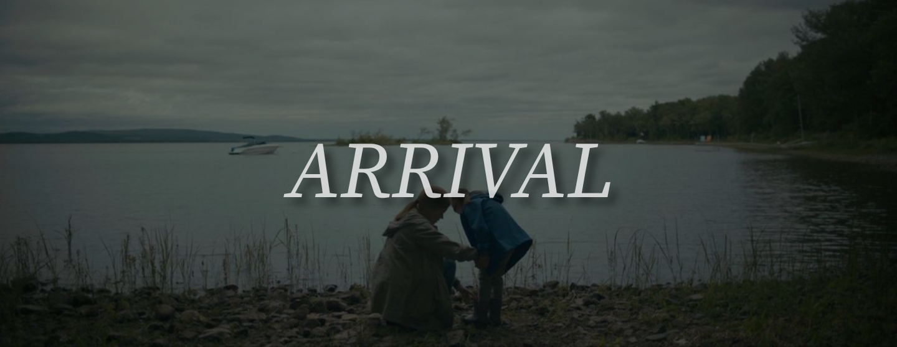

2016 | Runtime: 1h 56min | PG-13
Arrival's opening scene begins with a melancholy montage of linguist Louise Banks and her newborn daughter, Hannah. The first two minutes in this opening scene shows Hannah growing up, from when she was a cheerful little girl, to when she was a bratty teen, and dreadfully, to when she falls ill and tragically passes away, leaving Banks in grief.
Going back to the present, Louise teaches at a university when class suddenly gets cancelled due to twelve mysterious alien spacecrafts landing on Earth around the world. Affected nations send military and scientists to monitor and study the aircrafts. In the United States, Colonel Weber recruits Louise and physicist Ian Donnelly to study the craft in Montana. On board, Louise and Ian make contact with two seven-limbed aliens, whom they call "heptapods” who write in complex, circular ink symbols and share the results with other nations.
However, as Louise studies the language, she starts to have strange flashback-like visions of her daughter, who does not exist yet. Louise and Ian also develop a relationship beyond just being coworkers. When Louise is able to establish sufficient shared vocabulary to ask why the heptapods have come, they answer with a statement translated as "offer weapon”. Other nations’ leaders such as Chinese General Shang, misread the alien phrase as a threat and attacks the ship in China. In a desperate race against time, Louise realizes the heptapod language has no concept of past or future, but is entirely non-linear. The more she learns the language, the more her mind has been rewired to perceive time the same way, meaning her "memories" of her daughter are actually visions of the future existing in the present all at once.
While tensions rise worldwide, Ian discovers that the heptapod’s symbol for time is present throughout the message and that the writing occupies exactly one-twelfth of the 3D space into which it is projected. Louise suggests that the full message is split between the twelve crafts and that the heptapods want all the nations to collaborate in order to decipher it.
Louise does not believe the aliens are here to harm humans, and goes back to the aircraft to find real answers. One of the heptapods explains that they have come to help humanity, because in 3,000 years' time, they will need humanity's help in return. Banks realizes the "weapon" is their language. Learning the language alters humans' linear perception of time, allowing them to experience memories of future events, which explains Louise's visions of her daughter, which are revealed to be premonitions. Using this ability, she sees a future moment where she speaks to General Shang at a gala, learning his private number and the exact last words of his dying wife that will change his mind. She uses that future knowledge in the present to call him and stop the attack. The Chinese announce that they are standing down and releasing their twelfth of the message. The other countries follow suit, and the twelve spacecraft depart.
In the aftermath, Ian tells Louise he loves her and asks if she wants to have a child together. She says yes, fully aware that their daughter will die young, that Ian will leave her when he discovers she knew, and that she will face it all alone. The closing scene is a full circle moment of the film’s opening scene. It reveals how Louise’s daughter, Hannah, came to be, and how Ian fits into the picture. Louise narrates saying that despite the journey and where it may lead, she embraces it and welcomes every moment of it, making the film's sad but somehow optimistic argument: that a life fully lived, even one saturated with loss, is still worth choosing.
Rotton Tomatoes: 89%
My rating: 4/5
Arrival is a film that gets me thinking about the future and past a lot, often not in a happy way. The question Louise asks in the closing scene, "If you could see your whole life from start to finish, would you change things?" is something I find myself asking as well. It's a reminder for me to live authentically, be free and to take risks, no matter what. I like that Arrival's message was about life and death, and to not be scared of the things that the future holds, because in the end, it will all be okay.
>I couldn't get enough of the visuals in this movie. Every scene feels like a desktop wallpaper. I enjoyed how I could almost feel what the atmophere inside the heptapod's aircraft felt like. The concept of the spacecraft is also something worth noting. Usually, you think of flying saucers with crazy lights, and overwhelming technology, but not in Arrival. The spacecraft design is smooth, minimalist, organic but still enough to make us belive that it is otherworldly. The color palette of each scene transcends a feeling of sadness and confusion, much like what Louise feels throughout the film.
Dare I say Any Adams was snubbed of that Oscar. There aren't many characters in this film, with Amy Adams being the only main character besides Jeremy Renner and the heptapods. She gives an incredible performance, and I couldn't think of anyone else who would portray Louise Banks in such a way.
It wouldn't be a Villeneuve film review without talking about the soundtrack. For both the opening and closing scene of Arrival, the film uses Max Richter's "On the Nature of Daylight", a heavy instrumental song that has been used in multiple films, more recently in Chloe Zao's "Hamnet". It's a real tear jerker, and can instantly set a tone for the rest of the movie. It's impact is so powerful that whenever I think of Arrival, I think of the song, and vice versa.
Arrival is a film that leaves you a little confused the first time, curious the second time, and wiping your tears the third time, once you finally understand the core of its plot. I think that it challenges the narrative around what sci-fi films usually are: action filled, the bad alien-good human trope. Arrival changes that and instead revolves the whole story around Louise's grief and tragic outcome. You don't often see sci-fi and grief like Arrival's in other sci-fi films, and it is a fresh of breath air to watch.